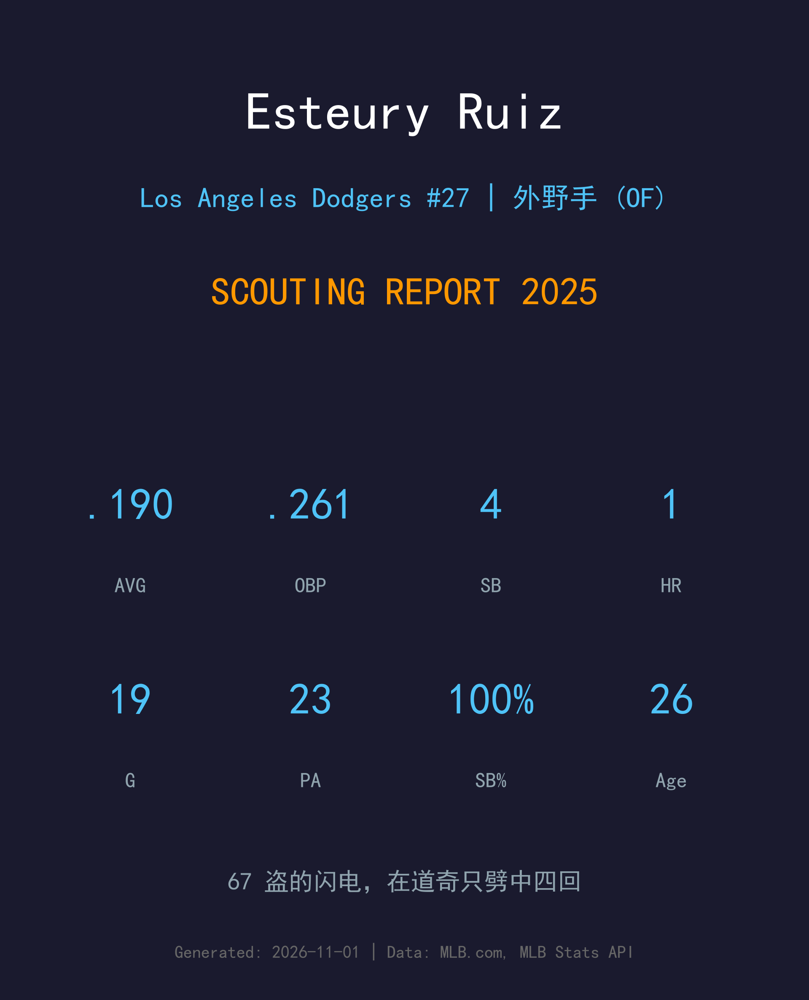
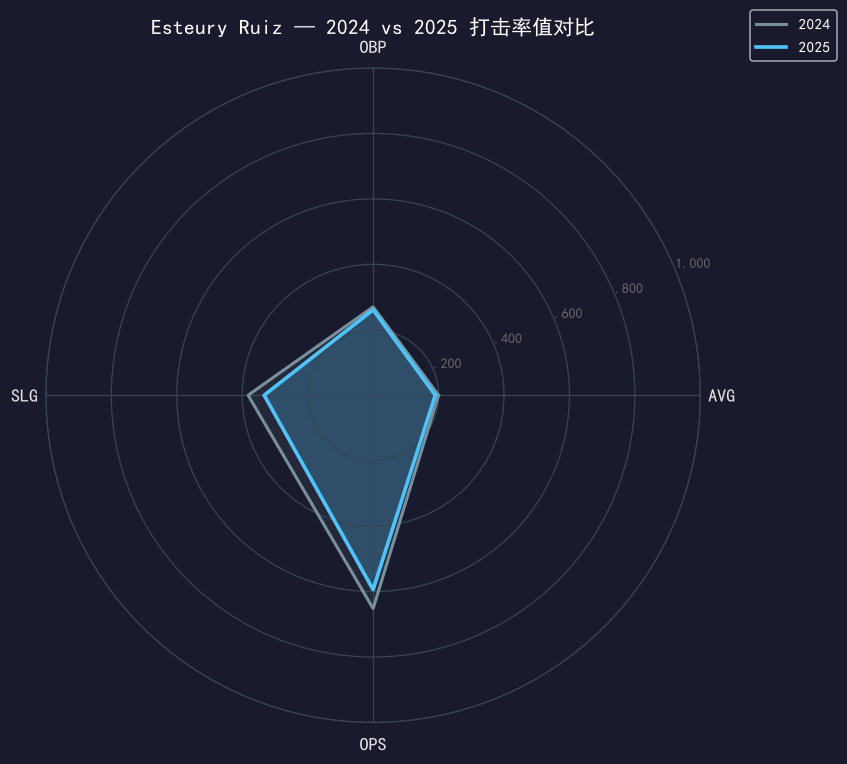
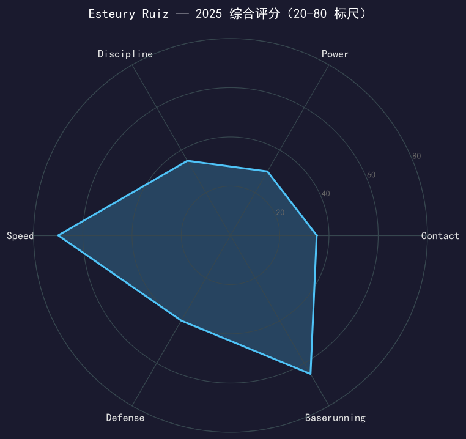

Los Angeles Dodgers #27 | 外野手 | 右打 | 67 盗的闪电，在道奇只劈中四回

⚠️ 小样本警告：本报告基于 19 场 / 23 个打席的道奇段数据。
Esteury Ruiz 的名字在 2023 年曾让整个美联闻风丧胆：132 场、67 次盗垒——当年的美联盗垒王。运动家把他当作球队重建期的招牌速度型外野，然后他成了 roster 挤兑的牺牲品：2025 年 4 月 2 日，运动家把他送到道奇，只换回一名小联盟右投 Carlos Duran。
在道奇，他的角色被严格定义为「闪电代跑」：19 场出赛只有 23 个打席（场均 1.2 PA），大多数时候他在九局下半站上二垒，然后偷掉三垒。.190/.261/.333 的打击数据里只有 4 支安打——但其中 1 轰，而 4 次盗垒 4 次成功（100%）的纪录提醒所有人：他的双腿仍然是大联盟最贵的武器之一。
从 2025 年 11 月的视角看，26 岁的 Ruiz 是「单一工具极致化」的活标本：当那个工具是 80 级的速度时，大联盟永远有他的位置——问题只在于，道奇（或下一支球队）愿不愿意为他的双腿留一个 26 人名额。
运动家时期的巅峰：132 场、.254 打击率、67 次盗垒成功（成功率 84%）——当年美联最多，全联盟仅次于国联的 Acuña。那一年他让全美的捕手都开始练快传。
从教士（14 场）到酿酒人（3 场）再到运动家，一年内三次搬家——最终在奥克兰站稳，为 2023 的爆发铺平了路。
4 月 2 日加盟道奇后，19 场出赛 4 次盗垒全成功，成为冠军队九局战术板上最锋利的那枚棋子。

| 赛季 | 队 | G | PA | AVG | OBP | SLG | OPS | HR | RBI | BB | SO | SB |
|---|---|---|---|---|---|---|---|---|---|---|---|---|
| 2023 | OAK | 132 | 497 | .254 | .309 | .345 | .654 | 5 | 47 | 20 | 99 | 67 |
| 2024 | OAK | 29 | 65 | .200 | .270 | .382 | .652 | 2 | 8 | 4 | 20 | 5 |
| 2025 | LAD | 19 | 23 | .190 | .261 | .333 | .594 | 1 | 2 | 2 | 8 | 4 |
三年数据切成三个世界：2023 的 497 PA 是他的完整形态（.254 配上 67 盗，典型的「速度即上垒」型打者）；2024 因伤只剩 29 场；2025 在道奇则被压缩成战术工具。值得注意的是 2025 的 8 次三振只出现在 23 PA 里（34.8%）——他的 contact 问题比 2023 更严重，但在场均 1.2 PA 的代跑角色里，这个问题被刻意隐藏了。道奇没有要他打球，道奇只要他跑。
Ruiz 的困境是现代棒球最经典的悖论：他的 80 级速度在垒上价值连城，但他需要先把球打进场内或保送上垒。2023 年的 .309 OBP 勉强及格，2024-2025 掉到 .270/.261——当 OBP 低于 .280，再快的腿也只能在休息区里生锈。运动家愿意给他 497 PA 去赌，道奇只给他 23 PA 去用：这不是能力的否定，而是阵容深度的现实——冠军球队的打席从不养实验品。
别小看这 19 场代跑：季后赛里一次成功的盗垒能撬动整轮系列赛的走向，道奇在常规赛后段让他反复演练这个场景，本质是十月战术的彩排。历史上专职代跑（如 Terrance Gore、Quintin Berry）都是冠军队的标配配件，Ruiz 2025 年 4/4 的盗垒成功率和 100% 的战术执行率，正是这类角色的完美履历。他在道奇的数据难看，但他的工作从来不是「数据」。
道奇在 11 月 2 日重新激活 Ruiz 的名字——与 Stewart、Gervase 同批——这个动作的含义是「不让你在规则五选秀里被白白拿走」。对一名 26 岁、保有三选项年的速度型球员来说，这是「明年再来」的邀请函。他的 2026 剧本取决于一个变量：道奇外野会不会出现伤病窗口。

双腿值一个名额的速度幽灵
C+ 级 / 专职代跑与第四外野
道奇 2025 季后赛夺冠之路：外卡 2-0 红人 → NLDS 3-1 费城人 → NLCS 4-0 酿酒人 → 世界大赛 4-3 多伦多蓝鸟。
Ruiz 没有出现在季后赛的任何一场 boxscore 里——这并不矛盾：他在常规赛后段的 19 场本来就是「十月彩排」，但当真正的大幕拉开，道奇选择了更成熟的名单组合。他的季后赛记忆将停留在 9 月 29 日扩编召回的那个傍晚：冠军球场的灯光、牛棚里看 World Series 的氛围，以及一个多米尼加年轻人对自己说的那句「明年，轮到我在那里跑」。
Ruiz 的 2026 年取决于两件他控制不了的事：道奇外野的健康，以及联盟对专职代跑的需求。他能控制的是 OBP——如果 3A 能把上垒率刷回 .330，他会重新变成「每天先发中外野」的讨论对象；如果不行，他的生涯将定格在「世界大赛球队的季后赛秘密武器」这个既荣耀又尴尬的位置。26 岁的腿还够快，时间还够，但每一步都必须踩在垒包上。
理想剧本：3A 刷出 .340 OBP，夏天重回大联盟轮值外野
现实基准：整季在 3A 与大联盟之间往返，季后赛代跑专员
下行风险：速度随年龄折损后工具箱清空
Esteury Ruiz 来自多米尼加中南部的阿苏阿，2022 年在教士登上大联盟时，球探报告上只有一行加粗的字：「80 级速度，其余未知。」2022 年他辗转教士、酿酒人、运动家三队，像一颗被传来传去的速度彩票；2023 年在奥克兰，这张彩票终于兑奖——132 场 67 盗，全美的二垒手都开始研究他的起跳节奏。
但 2024 年的伤病把节奏打断了。29 场之后，运动家的重建名单里长出了更年轻的名字，4 月 2 日，他被送去道奇换了一名小联盟投手——一笔在新闻里只有两行字的交易，却让他从百败球队的最速男变成了卫冕冠军的战术暗器。
2025 年 11 月的 Esteury Ruiz 刚拿到道奇的「保留名单确认函」。从阿苏阿的尘土球场到道奇体育场的灯光，他的每一步都在证明同一件事：当快到一定程度，棒球总会给你留一扇门——哪怕那扇门每次只开 1.2 个打席。